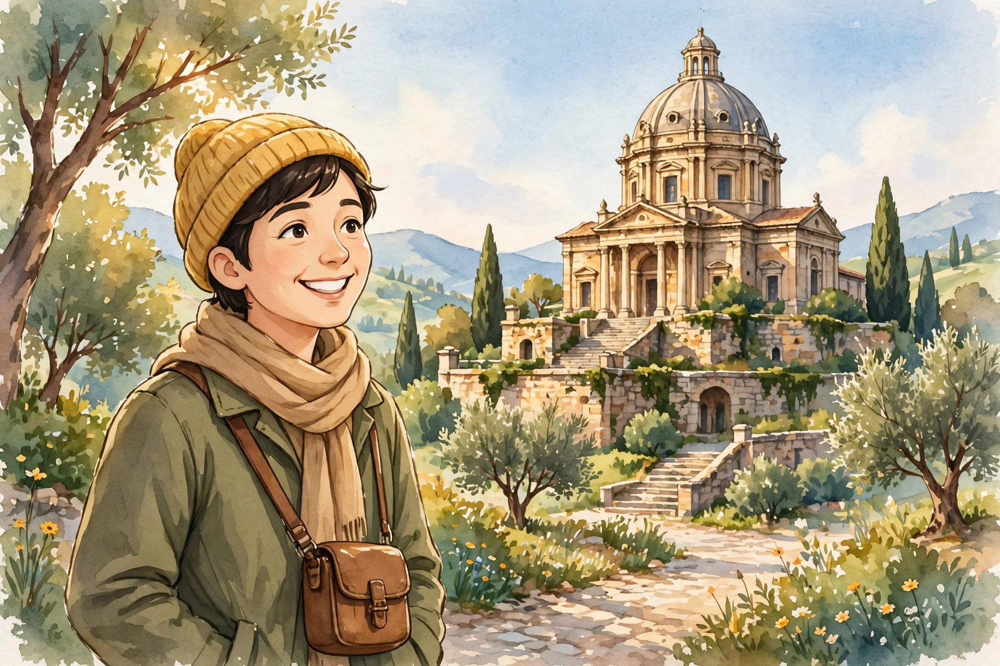

Travel Portrait Prompts: 10 Ideas for Gemini and ChatGPT 2026


Travel photos have a habit of disappointing us. The place was amazing, but the photo is a blurry figure in front of a landmark, half hidden by strangers. I have a phone full of those.
These prompts fix that. They keep your face the same and place you properly in the scene, in front of a landmark, on a mountain trail, in a village street, by the sea.
Start with a clear photo of yourself in decent light. It does not need to be from a trip. The prompt adds the place.
Pick the place that matches a trip you loved, or one you dream about. Either way, try one prompt first and see how it looks.
Before you start
Travel scenes have a lot going on, so these five points keep the result clean.
- Use a photo where your face is clear and facing the camera. A busy travel scene needs a strong, clear face to hold it together.
- Pick a starting photo with a simple background. The prompt adds the landmark or the street, and it needs a clean base.
- Keep your outfit simple in the starting photo. Bright, busy clothes fight with a busy place.
- Copy the prompt exactly as it is the first time. Change one thing later if you need to, not five at once.
- Save the best result, then try once more. Travel light varies a little each run, and the second version is often the sharper one.
Table of contents
- Prompt 1: In front of a famous landmark
- Prompt 2: On a mountain trail
- Prompt 3: In a busy market abroad
- Prompt 4: By the sea on holiday
- Prompt 5: In a small village street
- Prompt 6: At a train station
- Prompt 7: On a boat, smiling
- Prompt 8: In a desert at sunset
- Prompt 9: In a forest, hiking
- Prompt 10: At an airport, ready to go
- How to use these prompts
- Tips to get a better result
- Common mistakes to avoid
- Frequently asked questions
10 copy and paste prompts
Choose the place you want to be in, copy the prompt, and paste it with your photo.
1. In front of a famous landmark
Create a realistic, natural photo from my uploaded photo. Keep the face exactly the same as in the uploaded photo, with the same eyes, smile, hair and skin tone. Do not change the person into someone else, and do not make the skin look smooth or plastic. Show you in front of a famous landmark, smiling, in a casual outfit, with soft daylight. Keep the pose relaxed and natural, with a real expression, not a stiff studio pose. Use soft, natural light that suits the scene, with clear detail in the face, hair and clothes. Keep the background simple so the person stays the main focus. Shoot it in a vertical 3 to 4 frame, as if taken on a 35mm lens with a shallow depth of field. The final photo should look like a real photo taken on a good day, with true colours, gentle shadows and a calm, honest feel. It should work well for a profile photo, a print, or a post with family and friends.
A famous landmark tells the story in one look. The building stays clear behind you, your face stays clear in front, and the photo reads as travel at once.
2. On a mountain trail
Create a realistic, natural photo from my uploaded photo. Keep the face exactly the same as in the uploaded photo, with the same eyes, smile, hair and skin tone. Do not change the person into someone else, and do not make the skin look smooth or plastic. Show you on a mountain trail, in a warm jacket, with mountains and a clear sky behind you. Keep the pose relaxed and natural, with a real expression, not a stiff studio pose. Use soft, natural light that suits the scene, with clear detail in the face, hair and clothes. Keep the background simple so the person stays the main focus. Shoot it in a vertical 3 to 4 frame, as if taken on a 50mm lens with a shallow depth of field. The final photo should look like a real photo taken on a good day, with true colours, gentle shadows and a calm, honest feel. It should work well for a profile photo, a print, or a post with family and friends.
A mountain trail adds height and fresh air. The path leads the eye to you, the peaks stay soft behind, and the portrait feels like an achievement.
3. In a busy market abroad
Create a realistic, natural photo from my uploaded photo. Keep the face exactly the same as in the uploaded photo, with the same eyes, smile, hair and skin tone. Do not change the person into someone else, and do not make the skin look smooth or plastic. Show you in a busy market, in a casual outfit, with stalls and warm light. Keep the pose relaxed and natural, with a real expression, not a stiff studio pose. Use soft, natural light that suits the scene, with clear detail in the face, hair and clothes. Keep the background simple so the person stays the main focus. Shoot it in a vertical 3 to 4 frame, as if taken on a 85mm portrait lens with a shallow depth of field. The final photo should look like a real photo taken on a good day, with true colours, gentle shadows and a calm, honest feel. It should work well for a profile photo, a print, or a post with family and friends.
A busy market abroad is full of life, so the prompt keeps you still in the middle of it. That stillness is what makes the portrait stand out.
4. By the sea on holiday
Create a realistic, natural photo from my uploaded photo. Keep the face exactly the same as in the uploaded photo, with the same eyes, smile, hair and skin tone. Do not change the person into someone else, and do not make the skin look smooth or plastic. Show you by the sea on holiday, in a light outfit, with warm light and soft waves. Keep the pose relaxed and natural, with a real expression, not a stiff studio pose. Use soft, natural light that suits the scene, with clear detail in the face, hair and clothes. Keep the background simple so the person stays the main focus. Shoot it in a vertical 3 to 4 frame, as if taken on a 35mm lens with a shallow depth of field. The final photo should look like a real photo taken on a good day, with true colours, gentle shadows and a calm, honest feel. It should work well for a profile photo, a print, or a post with family and friends.
By the sea on holiday, the light is bright and the water is calm. It is the most relaxing travel photo here, and the easiest to get right.
5. In a small village street
Create a realistic, natural photo from my uploaded photo. Keep the face exactly the same as in the uploaded photo, with the same eyes, smile, hair and skin tone. Do not change the person into someone else, and do not make the skin look smooth or plastic. Show you in a small village street, in a casual outfit, with old houses and soft light. Keep the pose relaxed and natural, with a real expression, not a stiff studio pose. Use soft, natural light that suits the scene, with clear detail in the face, hair and clothes. Keep the background simple so the person stays the main focus. Shoot it in a vertical 3 to 4 frame, as if taken on a 50mm lens with a shallow depth of field. The final photo should look like a real photo taken on a good day, with true colours, gentle shadows and a calm, honest feel. It should work well for a profile photo, a print, or a post with family and friends.
A small village street is personal in a way a landmark is not. Narrow lanes, old walls, quiet light. It feels like a place you found, not a place you queued for.
6. At a train station
Create a realistic, natural photo from my uploaded photo. Keep the face exactly the same as in the uploaded photo, with the same eyes, smile, hair and skin tone. Do not change the person into someone else, and do not make the skin look smooth or plastic. Show you at a train station, with a small bag, in a casual outfit, with soft light. Keep the pose relaxed and natural, with a real expression, not a stiff studio pose. Use soft, natural light that suits the scene, with clear detail in the face, hair and clothes. Keep the background simple so the person stays the main focus. Shoot it in a vertical 3 to 4 frame, as if taken on a 85mm portrait lens with a shallow depth of field. The final photo should look like a real photo taken on a good day, with true colours, gentle shadows and a calm, honest feel. It should work well for a profile photo, a print, or a post with family and friends.
A train station adds movement and a sense of going somewhere. The platforms stay simple, your expression stays clear, and the photo feels like a journey.
7. On a boat, smiling
Create a realistic, natural photo from my uploaded photo. Keep the face exactly the same as in the uploaded photo, with the same eyes, smile, hair and skin tone. Do not change the person into someone else, and do not make the skin look smooth or plastic. Show you on a boat, smiling, in a light outfit, with water and a calm sky. Keep the pose relaxed and natural, with a real expression, not a stiff studio pose. Use soft, natural light that suits the scene, with clear detail in the face, hair and clothes. Keep the background simple so the person stays the main focus. Shoot it in a vertical 3 to 4 frame, as if taken on a 35mm lens with a shallow depth of field. The final photo should look like a real photo taken on a good day, with true colours, gentle shadows and a calm, honest feel. It should work well for a profile photo, a print, or a post with family and friends.
On a boat, the water does half the work. Open sky, gentle movement, a real smile. It is a holiday photo that actually looks like a holiday.
8. In a desert at sunset
Create a realistic, natural photo from my uploaded photo. Keep the face exactly the same as in the uploaded photo, with the same eyes, smile, hair and skin tone. Do not change the person into someone else, and do not make the skin look smooth or plastic. Show you in a desert at sunset, in a light outfit, with warm light and soft sand. Keep the pose relaxed and natural, with a real expression, not a stiff studio pose. Use soft, natural light that suits the scene, with clear detail in the face, hair and clothes. Keep the background simple so the person stays the main focus. Shoot it in a vertical 3 to 4 frame, as if taken on a 50mm lens with a shallow depth of field. The final photo should look like a real photo taken on a good day, with true colours, gentle shadows and a calm, honest feel. It should work well for a profile photo, a print, or a post with family and friends.
A desert at sunset is bold and simple. Warm sand, low sun, a clear figure. There is nothing extra, which is why it photographs so well.
9. In a forest, hiking
Create a realistic, natural photo from my uploaded photo. Keep the face exactly the same as in the uploaded photo, with the same eyes, smile, hair and skin tone. Do not change the person into someone else, and do not make the skin look smooth or plastic. Show you in a forest on a hike, in a warm jacket, with trees and soft light. Keep the pose relaxed and natural, with a real expression, not a stiff studio pose. Use soft, natural light that suits the scene, with clear detail in the face, hair and clothes. Keep the background simple so the person stays the main focus. Shoot it in a vertical 3 to 4 frame, as if taken on a 85mm portrait lens with a shallow depth of field. The final photo should look like a real photo taken on a good day, with true colours, gentle shadows and a calm, honest feel. It should work well for a profile photo, a print, or a post with family and friends.
A forest hike is green, calm and a little wild. The trees frame you naturally, the light filters through, and the portrait feels like fresh air.
10. At an airport, ready to go
Create a realistic, natural photo from my uploaded photo. Keep the face exactly the same as in the uploaded photo, with the same eyes, smile, hair and skin tone. Do not change the person into someone else, and do not make the skin look smooth or plastic. Show you at an airport, ready to travel, in a casual outfit, with bright indoor light. Keep the pose relaxed and natural, with a real expression, not a stiff studio pose. Use soft, natural light that suits the scene, with clear detail in the face, hair and clothes. Keep the background simple so the person stays the main focus. Shoot it in a vertical 3 to 4 frame, as if taken on a 50mm lens with a shallow depth of field. The final photo should look like a real photo taken on a good day, with true colours, gentle shadows and a calm, honest feel. It should work well for a profile photo, a print, or a post with family and friends.
At an airport, ready to go, the photo is about the start of a trip. Bags packed, a hopeful look, a clean terminal behind you. It is a small story in one frame.
How to use these prompts
Style photos are about a look, so keep the starting photo simple and let the prompt add the clothes, the setting and the mood.
How to use a prompt in Google Gemini
- Open Gemini on your phone or computer.
- Upload a clear photo. Your face should be in focus and facing the camera.
- Copy one prompt from this page and paste it under your photo.
- Send it, and wait for the result. Do not send the same prompt again while it is still working.
- Look at the face first, then the outfit and the background. If the face looks right but the style feels too strong, try the same prompt once more.
How to use a prompt in ChatGPT
- Open ChatGPT on your phone or computer.
- Upload your photo in the chat.
- Copy one prompt from this page and paste it with your photo.
- Send it, and wait for the result.
- If the result is close but not quite right, ask for one small change, such as softer light or a plainer background, and keep the rest of the prompt the same.
Both tools can give a different result from the same prompt. That is normal. Try the same prompt in both tools if you have time, and keep the photo you like best.
Tips to get a better result
- Start with the clearest photo you have. A photo taken in daylight, with the face in focus, gives the best result.
- Keep the prompt simple on the first try. Long, complex prompts can confuse the tool and change the face.
- Change one thing at a time. If you want a different outfit, change only the outfit. If you want different light, change only the light.
- Use a vertical photo for a profile photo or a print. Most of the prompts on this page ask for a vertical 3 to 4 frame for that reason.
- Check hands, glasses, hats and small details in the result. AI tools still make small errors there, and a second try often fixes them.
- Save the prompt that worked for you. If you use the same prompt again with a new photo, the style will stay similar.
Common mistakes to avoid
- Do not use a dark, blurry or side view photo as your starting photo. The tool will have to guess the face, and the result can look like a different person.
- Do not upload a photo of another person without their permission. Only use photos you have the right to use.
- Do not copy a prompt and then change every line at once. You will not know what went wrong if the result is poor.
- Do not expect the same result every time. AI tools vary, even with the same prompt and the same photo.
- Do not mix two strong styles in one prompt. One clear look per photo works better than a blend of two.
Frequently asked questions
Can I use these prompts for free?
Yes, all 10 prompts on this page are free. Copy any of them, paste it into Gemini or ChatGPT with your own photo, and use the result for your own posts.
Which tool works best with these prompts?
Both work well. Gemini often handles a reference photo nicely, and ChatGPT often follows a detailed prompt nicely. Try the same prompt in both and keep the sharper result.
Why does the face change in my photo?
The starting photo is usually the cause. A dark, blurry or side view photo makes the tool guess at your face. Use a clear front photo in good light.
Can I change the prompt for my own photo?
Yes. Change the place, the outfit or the light to fit your trip, but keep the part about keeping your face the same. One change at a time is the safe way.
Can I use the photo I make for a card or a post?
Yes, for your own personal use. Post it on your own social media or use it as a profile photo. Do not use a photo of another person without their permission.
Related guides


See all Trending Prompts guides | Back to the home page
Written by Muhammad Afaq
Muhammad Afaq is a writer and AI prompt creator at Prompt Haven. He writes and tests the prompts on this site using Google Gemini and ChatGPT, with real photos, to check that each prompt is clear, simple, and easy to copy and paste.